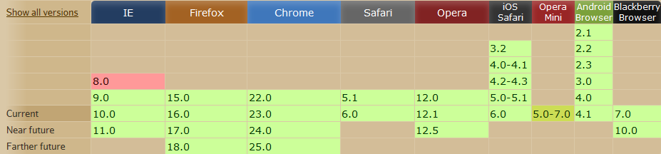
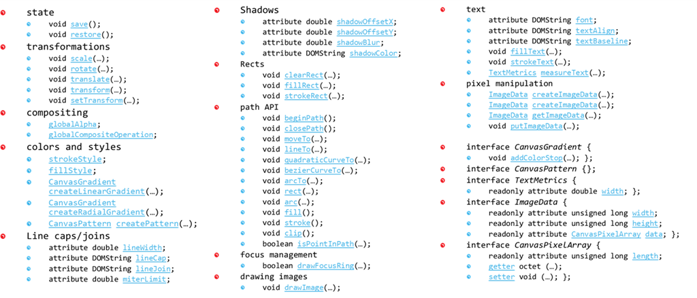
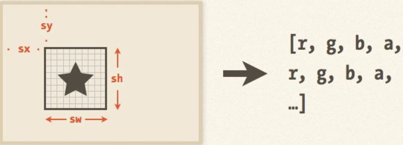

HTML 5
<Canvas>
Ilia Kazakov
History
Canvas was initially introduced by Apple in 2004

Living standard
Canvas compatibility
How it works
<canvas id='canvas' width='300' height='200'>You will see this message if your browser does not support canvas.</canvas>
const canvas = document.getElementById('canvas');
const ctx = canvas.getContext('2d');
ctx.moveTo(10,10);
ctx.lineTo(100,40);
ctx.stroke();
Canvas API
